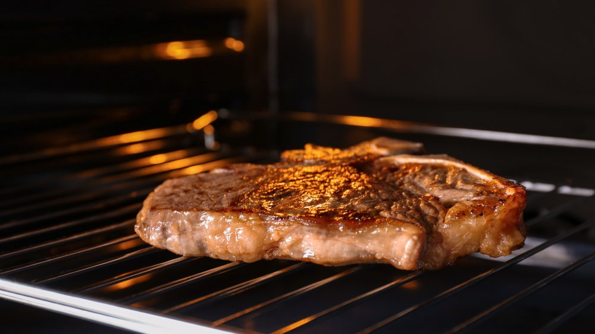

Steak in the Oven

Image from mashed.com, recipe mine :)
Description
The steak is a food that is really delicious when cooked in a lot of different ways. In this recipe i'm going to present my iteration of it in the oven.
Ingredients
- Steak
- Salt
- Pepper
- Oregano
- Olive oil
- (Optional) Mustard
Steps
- Take a fireproof glassware like Pyrex and throw some olive oil in it.
- (Optional) If you decide to add mustard, put it in the glassware like the olive oil too.
- Take the steak and put it in the Pyrex so it can be mixed with the olive oil and mustard on both sides.
- Sprinkle the steak with salt.
- Sprinkle with pepper.
- Sprinkle with oregano.
- Put the steak in the oven at 200 degrees for 15 min.
- Get the steak out of the oven and turn it around. Put it back in for another 15 minutes.
- It's ready!
Tips!
- You should sprinkle on both sides of the steak for better taste!
- When you take the steak out of the oven to turn it around, you can slice it a little bit with a knife, to get cooked better on the insides.